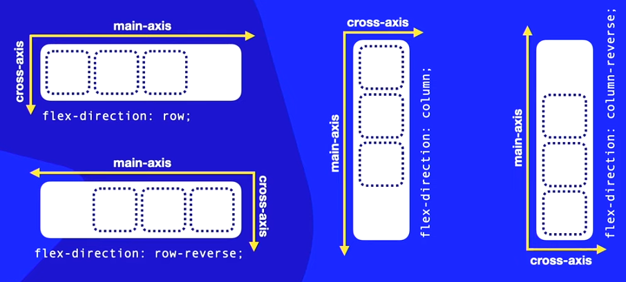
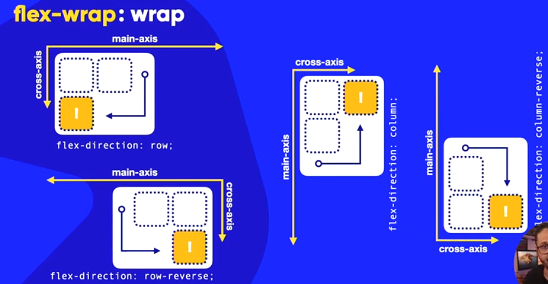
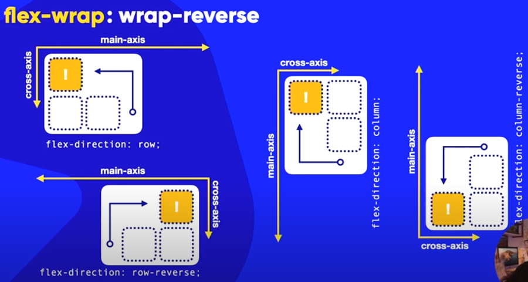
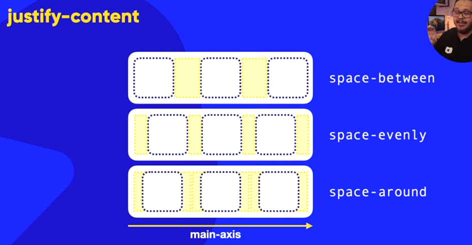

Flexible box é um atributo associado a um tipo de container pai para atribuir propriedades flexiveis aos flex-items dentro dele. Essa configuração é utilizada para maior adaptabilidade dos elementos dentro de um container em uma página.
Atributos
Outros atributos associados ao ao display flex são:
- Flexdirection: define a direção em que as caixas filhas serão alinhadas (imagem abaixo demonstra os tipos de valores e as direções dos eixos)

-
Flex-wrap: por padrão é definido como nowrap, significa empacotamento ou encapsulamento, define o comportamento do container em relação ao conteúdos (o comportamento de um bloco depende do conteúdo que existe nele). Esse atributo faz com que haja uma 'quebra de linha' para baixo com o wrap e para cima com wrap-reverse seguindo o cross-axis.


-
Flex-flow: abrevia (simplifica) o Flex-direction e o Flex-wrap respectivamente.
- Justify-content: alinhamento dos itens em relação ao eixo principal. dentre os tipos de valores temos:
- flex start: inicia o item no main start
- flex end: inicia o item no main end
- center: centralizado no meio do main axis
- space-between: primeiro e ultimo elementos grudados no main start e main end
- space-evenly: todos os espaçamentos entre os items é igual
- space-around: insere uma margem padrão de acordo com o tamanho do container para separar os valores.

-
align-items: esse parâmetro se refere ao alinhamento dos itens no cross-axis. Por padrão vem como strech que estica os elementos para preencher o tamanho do container. Outros valores que este parametro pode assumir são:
- flex-start: itens posicionados no inicio do cross-axis
- flex-end: itens posicionados no final do cross-axis
- center: alinha com espaços igualmente os itens no centro do cross-axis
- align-content: alinha os elementos no eixo transversal quando estiverem empacotados. Por padrão vem como strech (estica o elementos) e possui os mesmos parâmetros do justifycontent porém é usado no eixo transversal
Propriedades e Parâmetros para os itens
- Order: por padrão todos os elementos são 0; essa propriedade define a prioridade de ordem de exibição dos elementos filhos.
- Align-self: determina o alinhamento do item individualmente no eixo transversal
- Flex-basis: Define a largura do item limite do conteudo, por padrão vem como auto onde define que seu tamanho é dada pelo seu conteudo